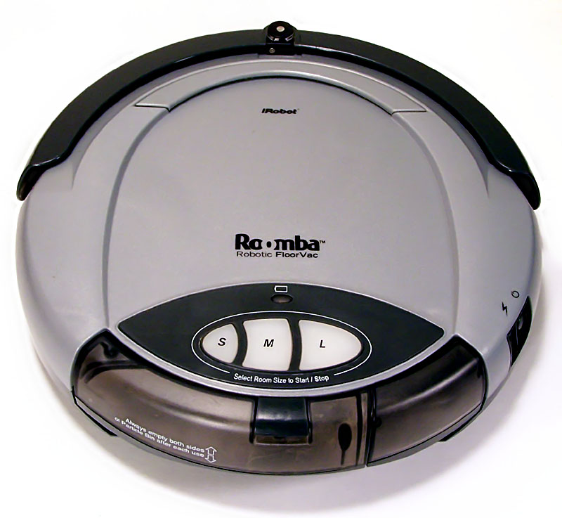
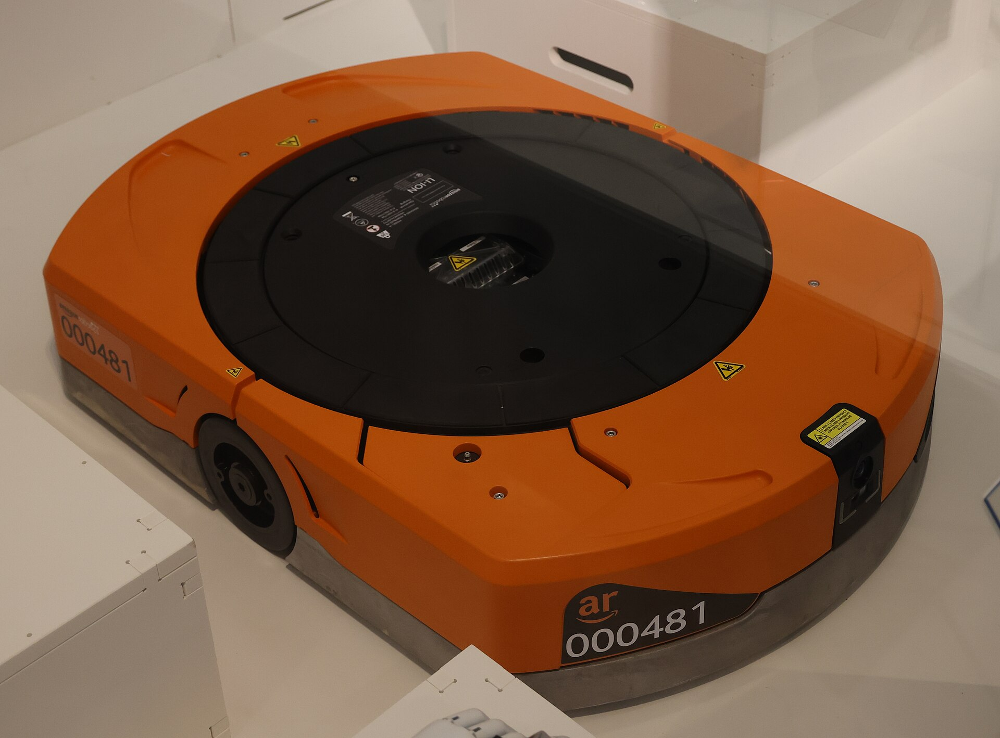

Sesión 1 · Unidad 1 · Bloque 2 de 3
IA distribuida y agentes
Del sistema que responde al sistema que actúa
Sistemas Inteligentes · Especialización en Inteligencia Artificial · UNAL Manizales · 30 min
← Bloque 1 Agenda Bloque 3 →
Regreso de la pausa. Este bloque pasa del sistema experto, que responde consultas, al agente, que actúa en un entorno. Tiene tres partes: qué es un agente racional y cómo especificarlo (PEAS), los tipos de entorno y las arquitecturas internas. Cierra con la idea de IA distribuida, que abre el Bloque 3.
Agentes
Del sistema experto al agente
Sistema experto Espera una consulta, razona y entrega una recomendación. No actúa por sí mismo: una persona decide si la aplica.
Agente Percibe de forma continua, decide y actúa. Sus acciones cambian el entorno, y el entorno cambia por sí solo.
MantenIA: el sistema experto diagnostica la falla; el agente despachador decide quién va, cuándo, y reprograma si algo cambia.
La diferencia esencial es el lazo con el entorno. Un sistema experto es un consultor; un agente es un actor. El sistema experto no tiene actuadores: su salida es un consejo (un diagnóstico, una configuración), y es una persona quien decide y lo ejecuta. MYCIN recomendaba un antibiótico, pero lo prescribía el médico; el agente, en cambio, actúa él mismo y ve el efecto de sus acciones. Al actuar, el agente enfrenta problemas nuevos: el tiempo, la incertidumbre sobre el efecto de sus acciones y la presencia de otros actores.
Agentes
¿Qué es un agente?
Cualquier cosa que percibe su entorno mediante sensores y actúa sobre él mediante actuadores. (Russell y Norvig, 2021)
Agente
Sensores
Función del agente percepciones → ¿qué hago ahora?
Actuadores
Entorno
órdenes de trabajo, técnicos,
equipos, clientes, vías
percepciones acciones
autonomía reactividad proactividad habilidad social Wooldridge y Jennings (1995)
La definición de Russell y Norvig es deliberadamente amplia: un termostato, un robot, un programa de trading o un chatbot son agentes. Lo que interesa es la función del agente: cómo convierte la historia de percepciones en una acción.
Wooldridge y Jennings (1995) añadieron cuatro propiedades para hablar de agentes inteligentes: autonomía (actúa sin intervención directa), reactividad (responde a cambios), proactividad (persigue metas por iniciativa propia) y habilidad social (interactúa con otros agentes y personas).
Agentes
El agente racional
Un agente es racional si, con lo que ha percibido y lo que sabe, elige la acción que en promedio dará el mejor resultado según la medida con la que lo evaluamos.
Definición formal: maximiza el valor esperado de su medida de desempeño (Russell y Norvig, 2021).
No adivina el futuro: decide sin saber cómo saldrá cada acción.Puede salirle mal: una buena decisión puede fallar por mala suerte, como un trancón imprevisto.Optimiza lo que le pedimos medir: si solo cuenta kilómetros, dejará esperando a los clientes lejanos. Elegir esa medida es una decisión de gestión.
La racionalidad depende de cuatro cosas: la medida de desempeño, el conocimiento previo del agente, las acciones disponibles y lo que ha percibido hasta ahora.
«Valor esperado» quiere decir el resultado promedio, pesando cada desenlace por su probabilidad. Ejemplo con el despachador de MantenIA: la técnica A llega en 30 minutos el 90 % de las veces y en 90 minutos el 10 % (por el tráfico); el técnico B llega siempre en 40 minutos. La espera esperada con A es 0,9 × 30 + 0,1 × 90 = 36 minutos, menor que los 40 de B. El agente racional envía a A, aunque a veces le salga peor: lo juzgamos por la calidad de la decisión con la información que tenía, no por el resultado de un caso.
Para un público de gestión, el tercer punto es el más importante: un agente optimiza exactamente lo que le pedimos medir. Si el despachador solo minimiza kilómetros, dejará esperando a los clientes lejanos. Este riesgo, la mala especificación del objetivo, se estudia a fondo en la Unidad 6.
Caso MantenIA
Antes de formalizar: el despachador
Cada mañana llegan unas 60 órdenes de trabajo. El despachador decide quién atiende qué y en qué orden. Durante el día reprograma ante urgencias, tráfico o una ausencia.
Hoy lo hace una persona con una hoja de cálculo y el teléfono.¿Qué tendría que percibir, saber y poder hacer un agente de software para apoyarla?
Partimos del trabajo real antes de la notación. El despachador humano combina información incompleta, metas en conflicto y cambios constantes; esa es exactamente la situación para la que se diseñan los agentes.
La pregunta lleva a la siguiente diapositiva: PEAS es una forma ordenada de responderla.
Especificación
PEAS: especificar un agente con cuatro preguntas
P · Desempeño¿Cómo sabremos que lo hace bien? E · Entorno¿Dónde opera y con qué se encuentra? A · Actuadores¿Qué puede hacer? S · Sensores¿Qué puede percibir?
Especificar antes de construir: es el equivalente de los requisitos en un proyecto de IA.
PEAS viene de las siglas en inglés: Performance, Environment, Actuators, Sensors. Es la primera herramienta de diseño del curso y la usarán en el proyecto integrador.
En la práctica, la mayoría de los proyectos de IA que fracasan no lo hacen por el algoritmo sino por una especificación pobre: una medida de desempeño ambigua o sensores que no capturan lo que importa.
Caso MantenIA
PEAS del agente despachador
Desempeño Urgencias atendidas en menos de 4 h · órdenes a tiempo · kilómetros · carga equilibrada Entorno Órdenes, técnicos (habilidades, ubicación, turno), equipos, plantas, vías Actuadores Asignar, reprogramar, notificar, escalar a un supervisor Sensores Sistema de órdenes de trabajo, GPS, reportes de técnicos, sensores de equipos
Atención: las metas de desempeño compiten entre sí; hay que ponderarlas.
Recorrer la tabla. Destacar que la medida de desempeño tiene cuatro componentes que tiran en direcciones distintas: atender rápido las urgencias puede desequilibrar la carga y aumentar los kilómetros.
Ponderarlas no es un problema técnico sino de política de la empresa. El agente solo hará visible el compromiso que la organización decida.
Entornos
Propiedades del entorno
Observable ¿Ve todo lo relevante, o solo una parte?
Determinista ¿La misma acción produce siempre el mismo efecto?
Episódico ¿O cada decisión condiciona las siguientes?
Estático ¿O cambia mientras el agente delibera?
Discreto ¿Estados y tiempo finitos, o continuos?
Un solo agente ¿O hay otros que también deciden?
Cada propiedad es un eje: totalmente o parcialmente observable; determinista o estocástico; episódico o secuencial; estático o dinámico; discreto o continuo; de un agente o multiagente. Russell y Norvig añaden si el entorno es conocido o desconocido para el agente.
La clasificación importa porque determina la técnica. Un entorno observable, determinista y estático admite planificar todo de antemano. Uno parcial, estocástico y dinámico exige creencias, replanificación y razonamiento con incertidumbre (Unidades 2 y 7).
Entornos
Tres entornos organizacionales
Despachador Chatbot de servicio Trading algorítmico Observable Parcial Parcial Parcial Determinista Estocástico Estocástico Estocástico Episódico Secuencial Secuencial Secuencial Estático Dinámico Estático Dinámico Agentes Multiagente Multiagente Multiagente competitivo
Las organizaciones suelen ofrecer el caso difícil: parcial, estocástico, secuencial, dinámico y multiagente .
El chatbot se clasifica como estático porque el cliente espera mientras el agente responde, aunque la conversación avanza. Es multiagente porque el cliente también decide.
El trading es el extremo: los demás agentes son adversarios y el mercado cambia en milisegundos. Algunas clasificaciones son discutibles, y eso está bien: el valor del ejercicio es hacer explícitos los supuestos del diseño.
Arquitecturas
Arquitectura reactiva
Reglas condición → acción, sin modelo del mundo
Rápida y robusta; no planifica ni anticipa
Brooks (1986): conductas por capas que se inhiben unas a otras (subsunción)
MantenIA: si la temperatura supera el límite → detener el equipo y alertar

Roomba de primera generación. Foto: Larry D. Moore, CC BY 4.0 , Wikimedia Commons
Rodney Brooks (1986) propuso abandonar el modelo interno del mundo: conductas simples por capas, como evitar obstáculos o explorar, que reaccionan directamente a los sensores. En 1990 lo resumió así: "el mundo es su propio mejor modelo; siempre está exactamente al día" (Elephants Don't Play Chess ).
El Roomba de primera generación (2002), de iRobot, empresa que Brooks cofundó en 1990, ilustra la idea: limpiaba sin construir un mapa de la casa. En las organizaciones, las reglas reactivas son las alarmas y los disparadores automáticos, rápidos y confiables, pero incapaces de anticipar.
Arquitecturas
Arquitectura deliberativa
Mantiene un modelo del mundo y metas explícitas
Planifica una secuencia de acciones antes de actuar
Shakey (SRI, 1966–1972): el primer robot móvil que razonaba sobre sus acciones; de él nació el planificador STRIPS
MantenIA: planear la ruta del día de cada técnico
Shakey, SRI International. CC BY-SA 3.0 , Wikimedia Commons
El enfoque deliberativo es el opuesto: el agente piensa antes de actuar. Shakey combinaba visión, un modelo simbólico de su entorno y el planificador STRIPS (Fikes y Nilsson, 1971), base de la planificación automática que veremos en la Unidad 2.
Su debilidad es el tiempo: si el mundo cambia mientras el agente planifica, el plan puede llegar tarde.
Arquitecturas
Arquitectura BDI: creencias, deseos, intenciones
BDI viene del inglés Belief–Desire–Intention . Es un modelo de agente inspirado en cómo decidimos las personas: actúa según lo que cree del mundo, lo que desea lograr y aquello con lo que se compromete .
Percepción
Creencias lo que cree del mundo
Deseos lo que querría lograr
Intenciones a lo que se compromete
Plan y acción
el mundo cambia: se revisan creencias e intenciones
Clave: el compromiso . Una intención persiste hasta lograrse, volverse imposible o dejar de tener sentido.
BDI viene de la teoría del razonamiento práctico del filósofo Michael Bratman (1987): las personas no replanifican todo a cada instante, se comprometen con intenciones. Rao y Georgeff (1995) llevaron la idea de la teoría a la práctica en agentes de software. Su sistema PRS se probó, con un simulador y con financiación de la NASA, en el manejo de fallas del sistema de control de reacción del transbordador espacial (Georgeff e Ingrand, 1989); también se aplicó en gestión de redes y modelado de combate aéreo.
Ejemplo con el despachador de MantenIA. Creencia: la técnica Ana está libre y a 20 minutos de la planta. Deseos: atender todas las órdenes del día y no pagar horas extra, que pueden chocar entre sí. Intención: enviar a Ana a la orden 512. Si llega una orden urgente, el agente no replanifica todo: mantiene su intención mientras siga teniendo sentido.
El compromiso es lo que distingue una intención de un deseo. Un agente puede desear muchas cosas incompatibles, pero solo se compromete con algunas y las persigue hasta que tenga una buena razón para abandonarlas.
Caso MantenIA
El despachador como agente BDI
Creencias Ana está en la Planta Norte · la orden 512 es urgente · la vía a Chinchiná está cerrada
Deseos Urgencias en menos de 4 h · menos kilómetros · carga equilibrada
Intención Enviar a Ana a la orden 512 por la ruta alterna
Si llega una urgencia mayor, ¿reconsiderar o mantener el compromiso? Equilibrio entre persistencia y reactividad.
Las creencias pueden ser falsas: tal vez la vía ya se abrió. Los deseos pueden ser incompatibles entre sí. La intención es el compromiso concreto que el agente ejecuta.
El dilema de la reconsideración es central en el diseño de agentes. Si reconsidera demasiado, nunca termina nada; si reconsidera muy poco, ignora cambios importantes. Es el mismo dilema de cualquier equipo de operaciones.
Arquitecturas
Arquitecturas híbridas por capas
Capa social · coordinarse con la flota
Capa deliberativa · planear rutas
Capa reactiva · esquivar obstáculos
Cada capa responde a una escala de tiempo distinta.

Robot de bodega. Foto: Geni, CC BY-SA 4.0 , Wikimedia Commons
La práctica combina ambos mundos: una capa reactiva para lo urgente, en milisegundos; una deliberativa para lo planificable, en segundos o minutos; y en muchos casos una capa social para coordinarse con otros agentes. Arquitecturas clásicas de este tipo son TouringMachines e InteRRaP.
Un robot de bodega es el ejemplo actual: frena solo ante un obstáculo, planea su ruta hacia el estante y se coordina con cientos de robots para no bloquear los pasillos.
IA distribuida
De un agente a muchos: la IA distribuida
Resolución distribuida de problemas Módulos diseñados para cooperar en un mismo problema
Sistemas multiagente Agentes autónomos, quizá con metas propias, que deben coordinarse
¿Por qué distribuir? El problema ya está repartido (geografía, áreas, empresas), y se gana robustez, escala y respeto por la información local.
MantenIA con 40 técnicos: un despachador central se vuelve un cuello de botella.
La inteligencia artificial distribuida estudia sistemas con varios solucionadores. La división clásica, que Jennings, Sycara y Wooldridge (1998) atribuyen a Bond y Gasser (1988), distingue dos tradiciones: la resolución distribuida de problemas, donde las estrategias de interacción se diseñan como parte del sistema, y los sistemas multiagente, que estudian agentes autónomos, quizá preexistentes, que deben resolver un problema juntos.
Muchos problemas organizacionales están distribuidos por naturaleza: sedes, áreas, proveedores. Además, parte de la información es privada; un contratista no comparte su agenda completa. Esa es la puerta al Bloque 3.
Síntesis
Lo que nos llevamos de este bloque
Un agente percibe y actúa; ser racional es maximizar el desempeño esperado
Lo que se mide define el comportamiento: PEAS antes de construir
Los entornos organizacionales: parciales, estocásticos, dinámicos y multiagente
Arquitecturas: reactiva, deliberativa, BDI e híbrida por capas
Cuando el problema está repartido, la inteligencia también se reparte
Recapitular. El vínculo con el proyecto integrador es directo: cada equipo deberá describir su caso con PEAS y las propiedades del entorno.
Trabajo independiente 2
Un agente para su organización
Identifique un proceso de su organización donde un agente de software podría actuar , no solo responder. Especifique su PEAS y clasifique su entorno con las seis propiedades.
Recomiende una arquitectura (reactiva, deliberativa, BDI o híbrida) y justifique la elección.
Criterios de evaluación: PEAS completo y específico, clasificación del entorno justificada y coherencia entre el entorno y la arquitectura elegida.
Recomendar hacerlo antes de la sesión 2 si es posible, porque es insumo directo de la propuesta del proyecto integrador.
Referencias del bloque 2
Para profundizar
Russell, S. y Norvig, P. (2021). Artificial Intelligence: A Modern Approach (4.ª ed.), cap. 2. Pearson. aima.cs.berkeley.edu
Poole, D. y Mackworth, A. (2023). Artificial Intelligence: Foundations of Computational Agents (3.ª ed.), caps. 1–2. Texto abierto
Wooldridge, M. (2009). An Introduction to MultiAgent Systems (2.ª ed.). Wiley.
Wooldridge, M. y Jennings, N. (1995). Intelligent agents: theory and practice. The Knowledge Engineering Review , 10(2). Versión de autor
Brooks, R. (1986). A robust layered control system for a mobile robot. IEEE Journal on Robotics and Automation , 2(1). AI Memo 864
Brooks, R. (1990). Elephants don't play chess. Robotics and Autonomous Systems , 6(1–2). PDF
Fikes, R. y Nilsson, N. (1971). STRIPS: a new approach to the application of theorem proving to problem solving. Artificial Intelligence , 2(3–4). PDF
Bratman, M. (1987). Intention, Plans, and Practical Reason . Harvard University Press. Reedición CSLI
Rao, A. y Georgeff, M. (1995). BDI agents: from theory to practice. ICMAS-95 . PDF
Georgeff, M. e Ingrand, F. (1989). Decision-making in an embedded reasoning system. IJCAI-89 . PDF
Bond, A. y Gasser, L. (eds.) (1988). Readings in Distributed Artificial Intelligence . Morgan Kaufmann.
← Bloque 1 Volver a la agenda Bloque 3 →